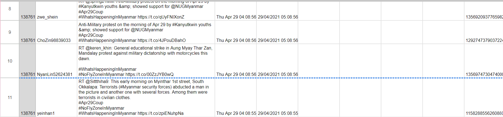
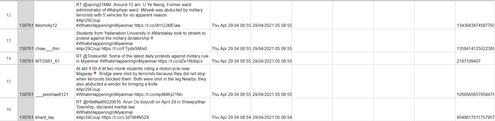
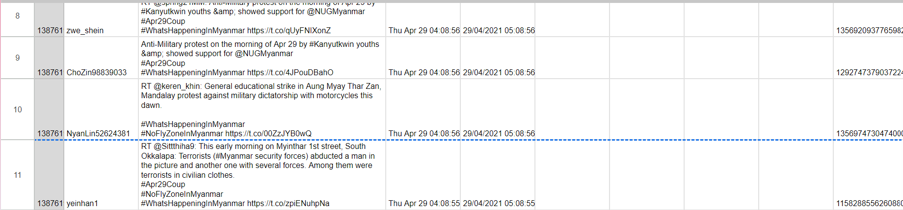
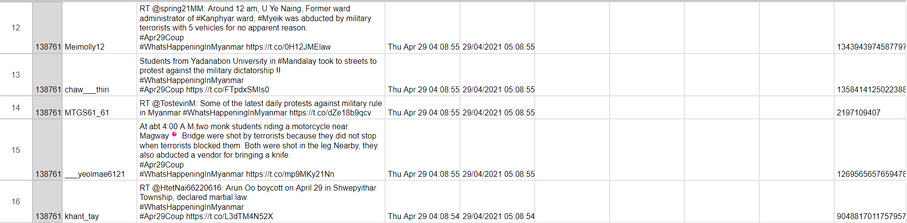
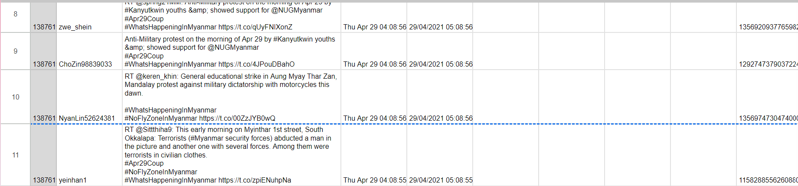
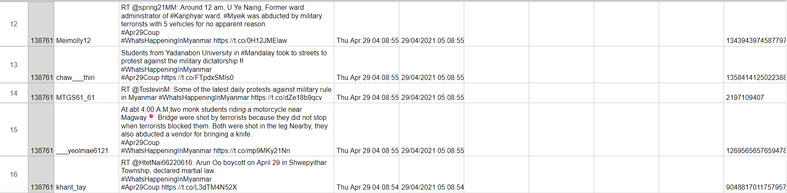
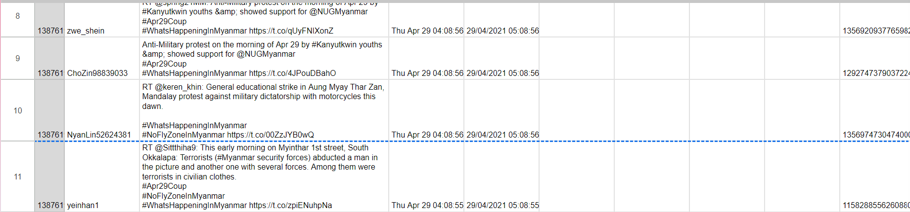
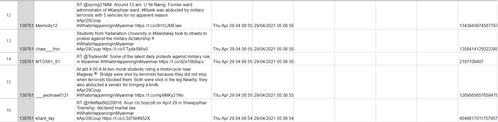

As part of this project, I collected and analyzed conversations on Twitter related to Myanmar's military actions. Using a T.A.G.S bot, I captured and processed a large number of tweets. The analysis focused on distinguishing fact-based posts from opinion-based ones, providing valuable insights for further research and reporting. This project involved significant data analysis and report writing to organize the findings into a coherent summary.
Technologies used: Data analysis, T.A.G.S bot, report writing.